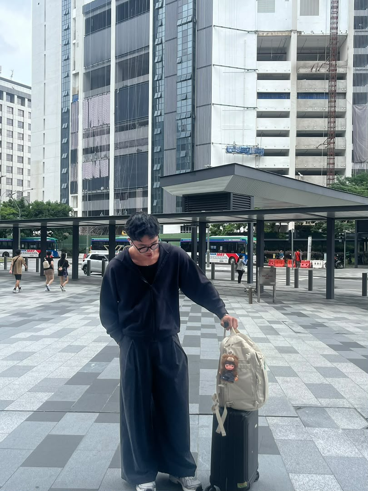

A visual corner for personal photographs, projects and memories.

Personal profilePersonal portfolioIMD318 website
Gallery note: replace the repeated sample image with your own different photos (projects, campus life, activities or achievements) before final submission.
External link
More of my work.
You can connect this page to a public portfolio or professional profile if you have one.